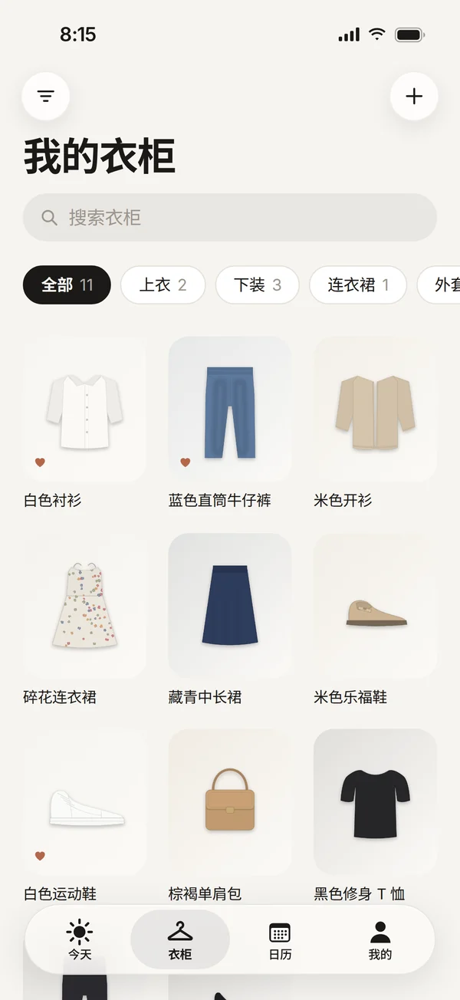
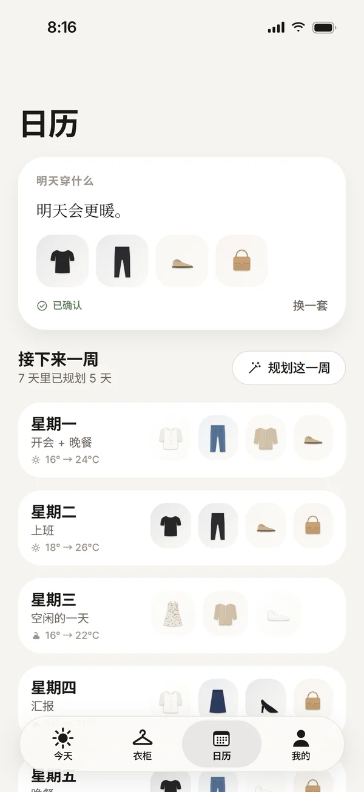
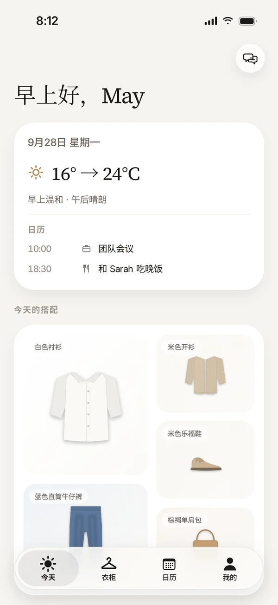
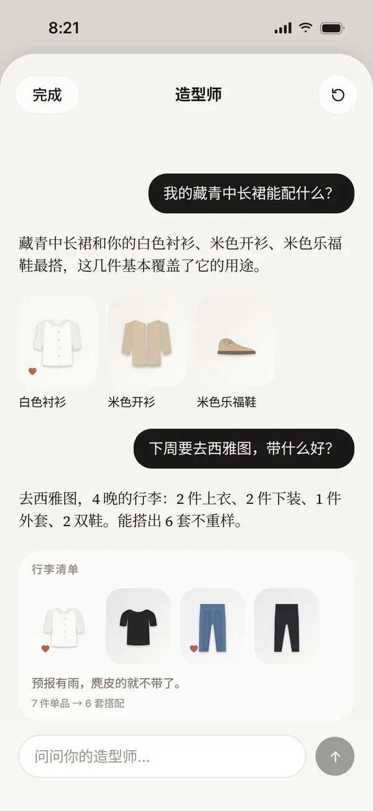
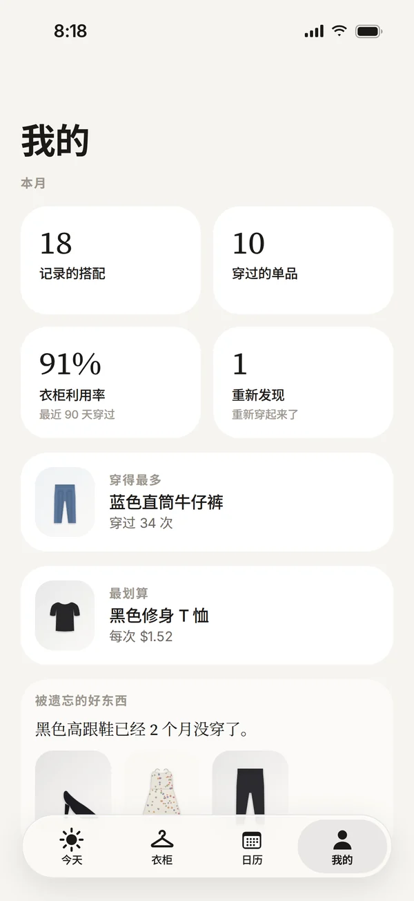

生活
衣见
每天穿什么，
替你想好了。
衣见是一位 AI 衣橱造型师：它知道你有哪些衣服、今天要去哪里、天气怎么样。把衣服拍一次，之后每天早上，它都会用你自己衣柜里的衣服搭好一套，并用一句大白话告诉你为什么这样搭。
即将上线
隐私



功能亮点
专注一件事，
把它做好。
01今天
打开它，就知道穿什么。
“今天”页先把一整天看完再做决定——从早到晚的天气，加上日历里的安排——然后用你自己衣柜里的衣服，平铺出一套搭配，点一下就能换。
- 按全天温度来穿：早上 16°、下午 24°，就配一件中午能脱掉的开衫
- 10 点开会、晚上 6 点半吃饭，一套就能兼顾
- “为什么这样搭”用一句大白话解释每套推荐——不打分
- 就穿这套、换一套、更随意、更正式——或点某件单品替换，或告诉它太热了
02衣柜
拍一次就够了。
把几件衣服摊开拍一张照片，衣见会在 iPhone 上把每一件分开、抠图，并标注颜色、图案、面料、保暖度和正式程度；识别不对的地方可以随时改。
- 拍照、从相册多选，或者一张对镜自拍
- 搜索、按品类筛选，按穿得最多或最少排序
- 放进待洗的衣服不会被推荐，洗好后自动回来
- 每件单品都记得穿过的搭配，以及和什么最配
03日历
一键规划一整周。
“规划这一周”会为接下来每一天搭好一套，匹配当天的天气和安排，并把常穿的单品错开，不会太快重复。前一晚，明天的搭配就放在最上面等你。
- 七天一目了然，每天都标着场合和温度区间
- 任何一天都可以换一套，或者清空
- 抢眼的单品比基础黑 T 休息得更久
- 可选的晚间提醒，告诉你明天穿什么

04造型师
用大白话问就行。
点右上角的对话气泡，就能和造型师聊。问今晚穿什么、某件心头好配什么，或者出门该带什么——回答和“今天”页用的是同一套引擎，只用你已有的衣服。
- “今天这套再随意一点”或“给我三套适合教堂的”
- 搭配问题，用你衣柜里的单品来回答
- 行李清单：用最少的单品搭出最多造型，并说明理由
- 在 iPhone 上运行——不需要账号，也不用注册

05我的
看看自己到底穿了什么。
“我的”页轻量又如实地记录你的衣橱：本月记录了多少套、最近 90 天衣柜用了多少、穿得最多的单品、每次穿着最划算的单品，还有被你遗忘的好东西。
- 记下价格，就能看到每次穿着的成本
- “被遗忘的好东西”把旧爱重新带回日常
- 设置你的风格、喜欢的颜色，以及平时穿得多正式
- 给搭配打个分，之后的推荐会参考你的反馈
提前替你看天气
冷比稍微热一点更难受，所以它宁可让你多穿一点；预报有雨时，会避开麂皮，提醒你带件有帽子的外套。
记得你喜欢什么
告诉它这套太热、太正式，或者刚刚好。反馈会随时间淡化，而你喜欢的组合会再次出现。
从设计上保护隐私
衣服照片用 Apple Vision 在 iPhone 本地分析；日历事件只转换成场合类型，标题不会离开你的设备。
详细信息
- 类别
- 生活
- 系统要求
- iOS 18 或更高版本。不授权任何权限也能用；实时天气来自 Apple WeatherKit，日历为可选。
- 开发者
- 4M Studio
- 网站语言
- English · 中文
4M Studio 的更多应用